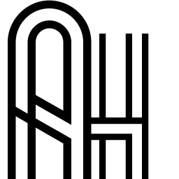

<!DOCTYPE html>
<html></html>
<head>
    <meta charset="utf-8">
    <title>Adron B. Hall</title>
    <meta name="viewport" content="width=device-width, initial-scale=1.0">
    <script src="./js/jquery.min.js"></script>
    <link href="./bootstrap/css/bootstrap.min.css" rel="stylesheet" media="screen">
    <link href="./bootstrap/css/bootstrap-responsive.min.css" rel="stylesheet">
    <script src="./bootstrap/js/bootstrap.min.js"></script>
    <link href="./css/glyphicons.css" rel="stylesheet" media="screen">
    <script src="./js/jquery.easing.1.3.js"></script>
    <script src="./js/jquery.isotope.min.js"></script>
    <script src="./js/jquery.ba-resize.min.js"></script>
    <link href="./css/prettyPhoto.css" rel="stylesheet" media="screen">
    <script src="./js/jquery.prettyPhoto.js"></script>
    <script src="./js/klass.min.js"></script>
    <script src="./js/code.photoswipe.jquery-3.0.4.min.js"></script>
    <link href="./css/photoswipe.css" rel="stylesheet" media="screen">
    <link href="http://fonts.googleapis.com/css?family=Open+Sans|Oswald|Droid+Sans|Yanone+Kaffeesatz|Droid+Serif|Ubuntu|Lobster|Francois+One|Arvo|Changa+One|Rokkitt|Nunito|Bitter|Merriweather|Raleway|Pacifico|Josefin+Sans|Questrial|Cantarell|Norican|Vollkorn|Quicksand|Limelight|Cantata+One|Bree+Serif|Oleo+Script|Playfair+Display|Quattrocento+Sans|Berkshire+Swash|Passion+One|Cuprum"
          rel="stylesheet" type="text/css">
    <link href="./style.css" rel="stylesheet" media="screen">
    <link type="text/css" rel="stylesheet/less" href="./css/skin.less" media="screen">
    <script src="./js/less-1.3.3.min.js"></script>
    <script src="./js/scripts.js"></script>
    <!--if lt IE 9link(rel='stylesheet', type='text/css', href='./css/ie.css')
    script(src='http://html5shim.googlecode.com/svn/trunk/html5.js')-->
    <link type="text/css" rel="stylesheet" href="./css/print.css" media="print">
</head>
<body>
<body data-spy="scroll" data-target=".sidebar-nav" class="backgrounded">
<div id="phone-navbar" class="navbar navbar-inverse navbar-fixed-top visible-phone noprint">
    <div class="navbar-inner">
        <div class="container"><a data-toggle="collapse" data-target=".nav-collapse" class="btn btn-navbar"><span
                class="icon-bar"></span><span class="icon-bar"></span><span class="icon-bar"></span></a><a href="#"
                                                                                                           class="brand">Adron
            B. Hall</a>

            <div class="nav-collapse collapse">
                <ul class="nav">
                    <li><a href="#about-me" class="scroller">About me</a></li>
                    <li><a href="#personal-information" class="scroller">Personal Info</a></li>
                    <li><a href="#employment" class="scroller">Employment</a></li>
                    <li><a href="#blog" class="scroller">Blog</a></li>
                    <li><a href="#contact" class="scroller">Contact</a></li>
                </ul>
            </div>
            <!--/.nav-collapse --></div>
    </div>
</div>
<!--/#phone-navbar -->
<div class="container">
    <div id="content" class="row"><!--MAIN CONTENT-->
        <div id="main-content" class="span9 equal">
            <div class="tools noprint visible-desktop"><a href="javascript:if(window.print)window.print()" title="Print"
                                                          data-placement="bottom" class="tips glyphicons print"><i></i></a>
            </div>
            <div id="about-me" class="section first-section">
                <div class="row author">
                    <div class="span3"><a href="http://adron.me"></a></div>
                    <div class="span6"><h1>Adron B. Hall</h1><br>

                        <h2 class="primary-color">Coder, Messenger, Recon</h2></div>
                </div>
                <div class="well"><h3>Breaking it down...</h3>

                    <p>I'm a Coder, have been for many years and I love coding. I've taken dives into everything from C#
                        on large scale enterprise apps, ported scaled security systems in Java to other languages, slung
                        C, C++ and Objective-C on projects and surfed the web building JavaScript Apps. The list goes on
                        and on as I'm super passionate about coding, but what I focus on and am skilled at only starts
                        there.</p>

                    <p>I'm a Messenger, in the sense that I've been in roles as advocate, evangelists or 'the super
                        excited guy' because I am interested, driven and like to get intimately involved in technology,
                        implementation and seeing the big picture of how the technology - software or hardware - affects
                        us day to day. In this way I advocate and build systems, content, documentation even to bring
                        knowledge to those that seek to build our future!</p>

                    <p>I'm Recon, I scope out, read voraciously, learning always, watching for queues and market shifts,
                        new inventions and how they'll tie together for the next innovation. I like to get involved and
                        stay involved at hackathons, with other companies in partnerships and bringing engineering
                        efforts together.</p>

                    <p class="lead">...and that's just the high level!</p></div>
                <div class="social-media noprint"><h5>Follow me</h5>

                    <div>
                        <div title="Twitter" data-placement="bottom" class="tips icon-btn"><a
                                href="http://twitter.com/adron" class="glyphicons white twitter"><i></i></a></div>
                        <div title="Linkedin" data-placement="bottom" class="tips icon-btn"><a
                                href="http://www.linkedin.com/in/adron" class="glyphicons white linked_in"><i></i></a>
                        </div>
                        <div title="Github" data-placement="bottom" class="tips icon-btn"><a
                                href="http://www.github.com/adron" class="glyphicons white github"><i></i></a></div>
                        <div title="Composite Code" data-placement="bottom" class="tips icon-btn"><a
                                href="http://compositecode.com" class="glyphicons white rss"><i></i></a></div>
                        <div title="VCard" data-placement="bottom" class="tips icon-btn"><a href="/adron_hall.vcf"
                                                                                            class="glyphicons white vcard"><i></i></a>
                        </div>
                        <div title="Photography" data-placement="bottom" class="tips icon-btn"><a
                                href="http://photos.adron.me" class="glyphicons white picture"><i></i></a></div>
                    </div>
                </div>
            </div>
            <div id="personal-information" class="section"><h2 class="section-title"><span
                    class="glyphicons user"><i></i></span>Personal Information<a href="#phone-navbar"
                                                                                 class="top visible-phone"><span
                    class="glyphicons white up_arrow"><i></i></span></a></h2>

                <div class="row">
                    <div class="infoline span9">
                        <div class="row">
                            <div class="span2 muted">Address</div>
                            <div class="span7">818 SW 3rd Ave #378<br>Portland, OR 97204<br></div>
                        </div>
                    </div>
                    <span class="clear"></span>

                    <div class="infoline span9">
                        <div class="row">
                            <div class="span2 muted">Email</div>
                            <div class="span7">"adronhall" at the "gmail.com"</div>
                        </div>
                    </div>
                    <span class="clear"></span>

                    <div class="infoline span9">
                        <div class="row">
                            <div class="span2 muted">Phone</div>
                            <div class="span7">503 890 8036<br></div>
                        </div>
                    </div>
                    <span class="clear"></span>

                    <div class="infoline span9 last">
                        <div class="row">
                            <div class="span2 muted">Website</div>
                            <div class="span7"><a href="http://compositecode.com" title="">Composite Code</a><br><a
                                    href="http://adron.me">Adron.me</a><br><a href="http://photos.adron.me">Photos.Adron.me</a>
                            </div>
                        </div>
                    </div>
                    <span class="clear"></span></div>
            </div>
            <div id="employment" class="section"><h2 class="section-title"><span
                    class="glyphicons share_alt"><i></i></span>Employment<a href="#phone-navbar"
                                                                            class="top visible-phone"><span
                    class="glyphicons white up_arrow"><i></i></span></a></h2>

                <div class="timeline">
                    <div class="timeline-item">
                        <div class="timeline-item-date">2010 - now</div>
                        <div class="timeline-item-trigger"><span data-toggle="collapse" data-target="#position1"
                                                                 class="glyphicons white circle_minus"><i></i></span>
                        </div>
                        <div class="timeline-arrow"><i></i></div>
                        <div class="timeline-item-content"><h3 data-toggle="collapse" data-target="#position1"
                                                               class="timeline-item-title">Startup & Small Biz Chief
                            Tech & Ops Officer</h3>

                            <div id="position1" class="collapse in">
                                <p>
                                    <small class="muted">from September 2010 to the present</small>
                                </p>
                                <h4 class="media-heading primary-color">Portland, Seattle, Vancouver BC and San
                                    Francisco</h4>

                                <p>I've setup a company to work with startups and small businesses with getting the
                                    right architecture, build and deployed product into place. I've pushed this business
                                    forward using lean startup approaches, focused on quality, user experience, and
                                    putting together teams that can get products built and deployed.</p>

                                <p>My focus and customer base has been startups in the very early stages of funding with
                                    early stage funding such as seed or A series, and small businesses working to grow
                                    their client base.</p>

                                <p>My approach has been technology neutral; However the technology frameworks used
                                    focused on; node.js for simple services, Ruby on Rails, Sinatra, JavaScript using
                                    jQuery and related libraries for UI, mobile UI, and related multi-tier web
                                    development. For more about these implementations, suggestions, practices, and other
                                    information please check out my blog at <a href="http://compositecode.com" title=""
                                                                               class="noprint">→ Composite Code</a></p>.
                            </div>
                        </div>
                    </div>
                    <!--/timeline-item--><span class="clear"></span>

                    <div class="timeline-item">
                        <div class="timeline-item-date">2010 - now</div>
                        <div class="timeline-item-trigger"><span data-toggle="collapse" data-target="#position2"
                                                                 class="glyphicons white circle_plus"><i></i></span>
                        </div>
                        <div class="timeline-arrow"><i></i></div>
                        <div class="timeline-item-content"><h3 data-toggle="collapse" data-target="#position2"
                                                               class="timeline-item-title">Technology Writer / Author /
                            Journalist @ CloudAve</h3>

                            <div id="position2" class="collapse">
                                <p>
                                    <small class="muted">from December 2010 to present</small>
                                </p>
                                <h4 class="media-heading primary-color">Portland, Seattle, Vancouver BC and San
                                    Francisco</h4>

                                <p>At CloudAve I've put together and written numerous articles on Cloud Computing,
                                    Software Development, and Leadership in the Software Industry. Through this position
                                    I have built relationships, elaborated on cloud computing, and expanded the
                                    knowledge of this industry with other thought leaders in the industry.</p>

                                <p>As part of the the role of writer, I also attend conferences such as OSCON, OS
                                    Bridge, Agile Open Northwest, and others to gain insight to the movement and
                                    development of cloud, development, and related technologies.</p>

                                <p>For more, check out <a href="http://www.cloudave.com/author/adron/" title=""
                                                          class="noprint">→ CloudAve</a></p></div>
                        </div>
                    </div>
                    <!--/timeline-item--><span class="clear"></span>

                    <div class="timeline-item">
                        <div class="timeline-item-date">2012 - 2013</div>
                        <div class="timeline-item-trigger"><span data-toggle="collapse" data-target="#position3"
                                                                 class="glyphicons white circle_plus"><i></i></span>
                        </div>
                        <div class="timeline-arrow"><i></i></div>
                        <div class="timeline-item-content"><h3 data-toggle="collapse" data-target="#position3"
                                                               class="timeline-item-title">Coder, Messenger, Recon (i.e.
                            Technical Evangelist) @ Basho</h3>

                            <div id="position3" class="collapse">
                                <p>
                                    <small class="muted">from December 2012 to August 2013</small>
                                </p>
                                <h4 class="media-heading primary-color">Portland, Seattle, Vancouver (BC) & Others</h4>

                                <p>Responsible for partnership reconnoitering, assisting on sales calls, working with
                                    partnership integration at New Relic and others. Handled all community organizing,
                                    conference organization and outreach in the Pacific Northwest (Cascadia Region). The
                                    user groups I formed and managed included two key groups.
                                <ul>
                                    <li>Seattle Basho & Riak User Groups http://www.meetup.com/Seattle-Riak/</li>
                                    <li>Portland Basho & Riak User Groups http://www.meetup.com/Portland-Riak/</li>
                                </ul>
                                </p><p>I also attended, spoke at and provided training at a number of conferences and
                                user groups throughout the United States.</p>

                                <p>Coding & development of vertical integration projects along with other horizontally
                                    scaled integration projects. From a tactical perspective integration involved
                                    JavaScript (Node.js), Ruby (on Rails, Sinatra or other variances), middleman for
                                    documentation, .NET and other languages working with Riak. Assisted customers with
                                    horizontal and vertical architecture around networking, security and other
                                    requirements to implement Riak, Riak with Redis, Neo4j, Postgres and other various
                                    technologies to provide highly available, scalable, high performance, resilient
                                    distributed data systems for application development.</p></div>
                        </div>
                    </div>
                    <!--/timeline-item--><span class="clear"></span>

                    <div class="timeline-item">
                        <div class="timeline-item-date">2012</div>
                        <div class="timeline-item-trigger"><span data-toggle="collapse" data-target="#position5"
                                                                 class="glyphicons white circle_plus"><i></i></span>
                        </div>
                        <div class="timeline-arrow"><i></i></div>
                        <div class="timeline-item-content"><h3 data-toggle="collapse" data-target="#position5"
                                                               class="timeline-item-title">Coder, OSS Organizer, &
                            Product Manager @ Tier 3</h3>

                            <div id="position5" class="collapse">
                                <p>
                                    <small class="muted">from March 2012 to November 2012</small>
                                </p>
                                <h4 class="media-heading primary-color">Portland, San Francisco, Seattle, New York &
                                    Others</h4>

                                <p>I joined Tier 3 in March to lead the Web Fabric PaaS Team, expand the Iron Foundry
                                    Community (http://www.ironfoundry.org/) and push forward the Thor Projects
                                    (http://www.ironfoundry.org/thor).</p>

                                <p>The initial release of the Tier 3 Web Fabric was deployed in May
                                    (http://www.tier3.com/blog/web-data-fabric). After the release I have focused
                                    primarily around advocacy, community leadership around the Iron Foundry Open Source
                                    Software Projects and initiating, building and leading the team that is coding the
                                    Thor Project as a UI for Cloud Foundry PaaS Environments.</p>

                                <p>In addition to these efforts I also routinely speak at user groups, keynotes, or
                                    other groups and lead community efforts around mentoring, teaching and expanding
                                    programming practice and knowledge in several cities including Seattle, Portland,
                                    San Francisco and generally anywhere I can get to and organize events.</p></div>
                        </div>
                    </div>
                    <span class="clear"></span>

                    <div class="timeline-item">
                        <div class="timeline-item-date">1996-2012</div>
                        <div class="timeline-item-trigger"><span data-toggle="collapse" data-target="#position4"
                                                                 class="glyphicons white circle_plus"><i></i></span>
                        </div>
                        <div class="timeline-arrow"><i></i></div>
                        <div class="timeline-item-content"><h3 data-toggle="collapse" data-target="#position4"
                                                               class="timeline-item-title">Cook to Tech to Drive to
                            Electrician to Construction worker @ Many Places...</h3>

                            <div id="position4" class="collapse">
                                <p>
                                    <small class="muted">from August 1996 to 2012</small>
                                </p>
                                <h4 class="media-heading primary-color">Portland, San Francisco, Seattle, New York &
                                    Others</h4>

                                <p>For more information check out my profile @<a href="http://www.linkedin.com/in/adron"
                                                                                 title="" class="nonprint">→
                                    LinkedIn</a></p></div>
                        </div>
                    </div>
                    <!--/timeline-item--><span class="clear"></span></div>
                <!--/timeline --><!--/section


--></div>
            <p>Updates to this site and others are coming! For more information check out my profile @<a
                    href="http://www.linkedin.com/in/adron" title="" class="nonprint">→ LinkedIn</a></p></div>
        <!--END OF THE MAIN CONTENT --><!--Sidebar placed on the RIGHT of the screen -->
        <div id="sidebar" class="span3 sbright noprint">
            <div class="sidebar-nav equal hidden-phone">
                <ul id="resumenav" class="nav nav-list affix">
                    <li><a href="#about-me" class="scroller">About me</a></li>
                    <li><a href="#personal-information" class="scroller">Personal Info</a></li>
                    <li><a href="#employment" class="scroller">Employment</a></li>
                </ul>
            </div>
            <!--/sidebar-nav --><span class="clear"></span></div>
        <!--/span3 --></div>
    <!--/row-->
    <div id="footer"><p>© Adron B. Hall - 2013</p></div>
</div>
<!--/.container--></body>
</body>